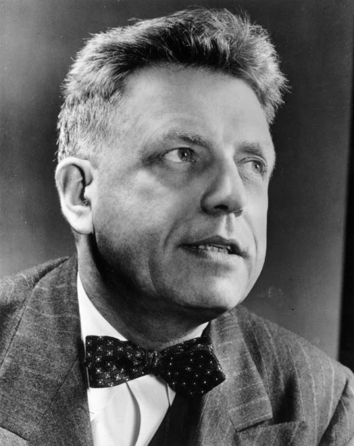
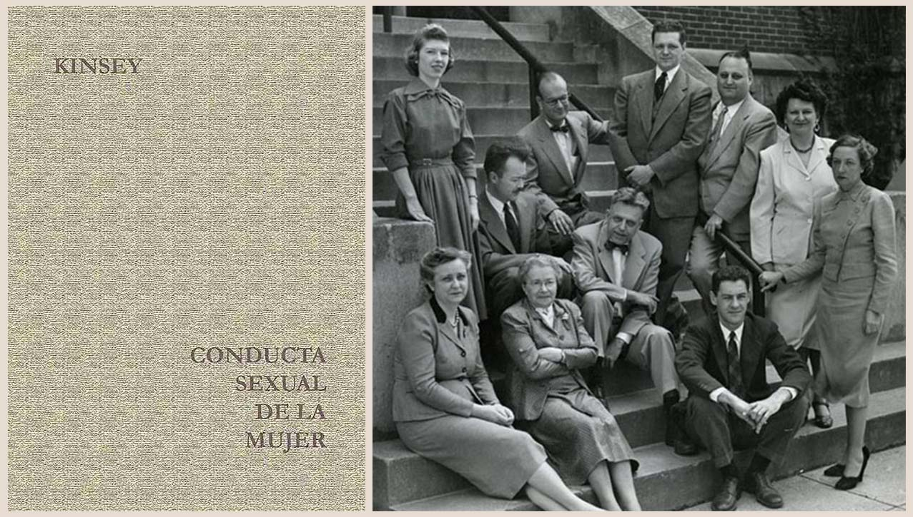

Alfred Kinsey:
Conducta sexual del hombre
Alfred Kinsey revolucionó a la sociedad norteamericana de la posguerra con sus estudios que demostraban la gran diversidad del comportamiento sexual humano. De profesión biólogo, se desempeñó como profesor en la Universidad de Indiana. Luego de impartir cursos sobre educación sexual a los estudiantes y descubrir lo poco que se sabía, decidió dedicarse por completo a la investigación sexual por medio de entrevistas personales. Sus colaboradores contaban que Kinsey tenía un don para hacer sentir cómodos a los entrevistados, revelando así sus más escondidos secretos, con un formato de preguntas muy estudiado y una actitud abierta y franca. El equipo descubre que hay un abismo entre lo que lo que la gente pregona como moral y lo que realmente hace en la intimidad. Ya durante la investigación fueron enfrentando la aversión de algunos sectores por ir inmiscuyéndose en la vida íntima de las personas.
Después de años de trabajo, en 1948 el equipo entregó una compilación del comportamiento sexual del hombre norteamericano, Sexual Behavior in the Human Male. El libro vendió 200.000 copias, convirtiéndose inmediatamente en un bestseller y en el libro de ciencia más vendido de la historia. Los Estados Unidos se revolucionaron ante la idea de que la mayoría de los hombres se masturbaba, que la homosexualidad no era tan insignificante como se creía, que el sexo oral era algo común al igual que el sexo extramarital. Kinsey se convirtió en un personaje famoso.
En 1953 publican Sexual Behavior in the Human Female para generar una revolución aún más grande que la anterior. Las encuestas demostraban que la mujer también se masturbaba, que también tenía comportamientos homoeróticos, que el orgasmo clitorial era más común que el vaginal y que el apetito sexual femenino seguía aumentando pasados los 30. Definitivamente la mujer tenía un sofisticado mundo erótico y no existía solo para satisfacer al hombre. Por supuesto que también fue un bestseller, pero esta vez los grupos conservadores comenzaron a levantarse. Hablar de vagina, clítoris y de la sexualidad de madres y hermanas, era demasiado. La Fundación Rockefeller suspendió su apoyo a las investigaciones y el Instituto Kinsey, fundado para darles una estructura formal, debió seguir por su cuenta.
Dado que nadie tenía argumentos para contradecir los resultados, se atacó el método de muestreo, ya que no era al azar. Otros criticaron que quienes respondían a sus encuestas eran un tipo definido de personas, algo así como exhibicionistas, y que nada se sabía sobre quienes se rehusaban a revelar sus intimidades. Como fuera, a partir de los "informes Kinsey", como les llamaron, el enfoque sobre la sexualidad occidental cambió drásticamente.
